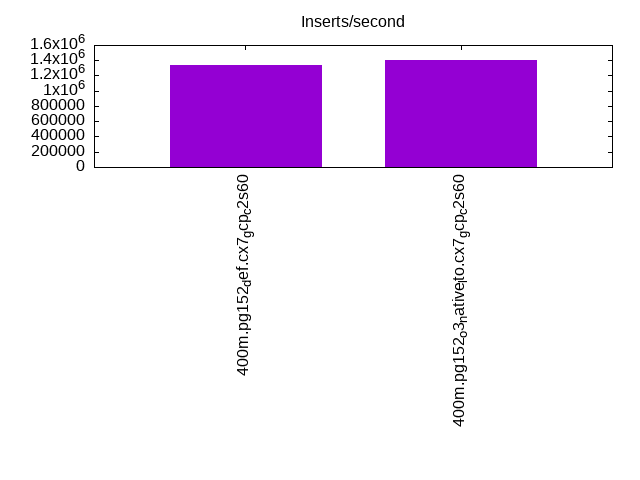

This is a report for the insert benchmark with 400M docs and 20 client(s). It is generated by scripts (bash, awk, sed) and Tufte might not be impressed. An overview of the insert benchmark is here and a short update is here. Below, by DBMS, I mean DBMS+version.config. An example is my8020.c10b40 where my means MySQL, 8020 is version 8.0.20 and c10b40 is the name for the configuration file.
The test server is a c2-standard-60 from GCP with 30 cores, hyperthreading disabled, 240G RAM and 3T from XFS and SW RAID 0 striped over 8 local NVMe drives. The benchmark was run with 20 clients and there were 1 or 2 connections per client (1 for queries, 1 for inserts). The benchmark loads 400M rows without secondary indexes, creates secondary indexes, loads another 400M rows then does 3 read+write tests for one hour each that do queries as fast as possible with 100, 500 and then 1000 writes/second/client concurrent with the queries. Each read-write test runs for 1800 seconds. The test was configured to use a table per client. The database is cached by the storage engine and the only IO is for writes. Clients and the DBMS share one server. The per-database configs are in the per-database subdirectories here.
The tested DBMS are:
The numbers are inserts/s for l.i0 and l.i1, indexed docs (or rows) /s for l.x and queries/s for q*.2. The values are the average rate over the entire test for inserts (IPS) and queries (QPS). The range of values for IPS and QPS is split into 3 parts: bottom 25%, middle 50%, top 25%. Values in the bottom 25% have a red background, values in the top 25% have a green background and values in the middle have no color. A gray background is used for values that can be ignored because the DBMS did not sustain the target insert rate. Red backgrounds are not used when the minimum value is within 80% of the max value.
| dbms | l.i0 | l.x | l.i1 | q100.1 | q500.1 | q1000.1 |
|---|---|---|---|---|---|---|
| 400m.pg152_def.cx7_gcp_c2s60 | 1342282 | 2685235 | 402414 | 191272 | 193504 | 195260 |
| 400m.pg152_o3_native_lto.cx7_gcp_c2s60 | 1403509 | 2703378 | 408163 | 200679 | 201426 | 205134 |
This lists the average rate of inserts/s for the tests that do inserts concurrent with queries. For such tests the query rate is listed in the table above. The read+write tests are setup so that the insert rate should match the target rate every second. Cells that are not at least 95% of the target have a red background to indicate a failure to satisfy the target.
| dbms | q100.1 | q500.1 | q1000.1 |
|---|---|---|---|
| pg152_def.cx7_gcp_c2s60 | 1977 | 9885 | 19769 |
| pg152_o3_native_lto.cx7_gcp_c2s60 | 1976 | 9885 | 19769 |
| target | 2000 | 10000 | 20000 |
l.i0: load without secondary indexes. Graphs for performance per 1-second interval are here.
Average throughput:
Insert response time histogram: each cell has the percentage of responses that take <= the time in the header and max is the max response time in seconds. For the max column values in the top 25% of the range have a red background and in the bottom 25% of the range have a green background. The red background is not used when the min value is within 80% of the max value.
| dbms | 256us | 1ms | 4ms | 16ms | 64ms | 256ms | 1s | 4s | 16s | gt | max |
|---|---|---|---|---|---|---|---|---|---|---|---|
| pg152_def.cx7_gcp_c2s60 | 58.019 | 41.032 | 0.911 | 0.008 | 0.013 | 0.016 | 0.001 | 1.391 | |||
| pg152_o3_native_lto.cx7_gcp_c2s60 | 58.790 | 40.412 | 0.743 | 0.018 | 0.022 | 0.015 | 0.605 |
Performance metrics for the DBMS listed above. Some are normalized by throughput, others are not. Legend for results is here.
ips qps rps rmbps wps wmbps rpq rkbpq wpi wkbpi csps cpups cspq cpupq dbgb1 dbgb2 rss maxop p50 p99 tag 1342282 0 0 0.0 1789.6 447.1 0.000 0.000 0.001 0.341 238565 59.9 0.178 13 38.3 104.3 NA 1.391 76242 8890 400m.pg152_def.cx7_gcp_c2s60 1403509 0 0 0.0 1862.6 465.8 0.000 0.000 0.001 0.340 256157 59.0 0.183 13 38.3 103.4 0.0 0.605 79014 9590 400m.pg152_o3_native_lto.cx7_gcp_c2s60
l.x: create secondary indexes.
Average throughput:
Performance metrics for the DBMS listed above. Some are normalized by throughput, others are not. Legend for results is here.
ips qps rps rmbps wps wmbps rpq rkbpq wpi wkbpi csps cpups cspq cpupq dbgb1 dbgb2 rss maxop p50 p99 tag 2685235 0 10190 109.5 3306.3 836.4 0.004 0.042 0.001 0.319 107384 26.7 0.040 3 73.5 173.2 0.0 0.272 NA NA 400m.pg152_def.cx7_gcp_c2s60 2703378 0 9760 107.1 3243.2 830.7 0.004 0.041 0.001 0.315 108973 26.0 0.040 3 73.5 171.7 0.0 0.055 NA NA 400m.pg152_o3_native_lto.cx7_gcp_c2s60
l.i1: continue load after secondary indexes created. Graphs for performance per 1-second interval are here.
Average throughput:
Insert response time histogram: each cell has the percentage of responses that take <= the time in the header and max is the max response time in seconds. For the max column values in the top 25% of the range have a red background and in the bottom 25% of the range have a green background. The red background is not used when the min value is within 80% of the max value.
| dbms | 256us | 1ms | 4ms | 16ms | 64ms | 256ms | 1s | 4s | 16s | gt | max |
|---|---|---|---|---|---|---|---|---|---|---|---|
| pg152_def.cx7_gcp_c2s60 | nonzero | 95.848 | 2.743 | 1.368 | 0.026 | 0.015 | 0.970 | ||||
| pg152_o3_native_lto.cx7_gcp_c2s60 | 0.004 | 95.933 | 2.639 | 1.384 | 0.025 | 0.015 | nonzero | 1.073 |
Performance metrics for the DBMS listed above. Some are normalized by throughput, others are not. Legend for results is here.
ips qps rps rmbps wps wmbps rpq rkbpq wpi wkbpi csps cpups cspq cpupq dbgb1 dbgb2 rss maxop p50 p99 tag 402414 0 5059 44.9 3499.8 521.0 0.013 0.114 0.009 1.326 300092 51.9 0.746 39 163.3 356.3 NA 0.970 25472 1699 400m.pg152_def.cx7_gcp_c2s60 408163 0 5261 45.3 3288.3 523.9 0.013 0.114 0.008 1.314 313851 50.9 0.769 37 163.3 356.5 0.0 1.073 26071 1848 400m.pg152_o3_native_lto.cx7_gcp_c2s60
q100.1: range queries with 100 insert/s per client. Graphs for performance per 1-second interval are here.
Average throughput:
Query response time histogram: each cell has the percentage of responses that take <= the time in the header and max is the max response time in seconds. For max values in the top 25% of the range have a red background and in the bottom 25% of the range have a green background. The red background is not used when the min value is within 80% of the max value.
| dbms | 256us | 1ms | 4ms | 16ms | 64ms | 256ms | 1s | 4s | 16s | gt | max |
|---|---|---|---|---|---|---|---|---|---|---|---|
| pg152_def.cx7_gcp_c2s60 | 99.971 | 0.022 | 0.006 | 0.001 | nonzero | 0.024 | |||||
| pg152_o3_native_lto.cx7_gcp_c2s60 | 99.977 | 0.017 | 0.006 | 0.001 | nonzero | nonzero | 0.073 |
Insert response time histogram: each cell has the percentage of responses that take <= the time in the header and max is the max response time in seconds. For max values in the top 25% of the range have a red background and in the bottom 25% of the range have a green background. The red background is not used when the min value is within 80% of the max value.
| dbms | 256us | 1ms | 4ms | 16ms | 64ms | 256ms | 1s | 4s | 16s | gt | max |
|---|---|---|---|---|---|---|---|---|---|---|---|
| pg152_def.cx7_gcp_c2s60 | 93.825 | 4.946 | 1.228 | 0.001 | 0.066 | ||||||
| pg152_o3_native_lto.cx7_gcp_c2s60 | 92.774 | 5.997 | 1.203 | 0.026 | 0.107 |
Performance metrics for the DBMS listed above. Some are normalized by throughput, others are not. Legend for results is here.
ips qps rps rmbps wps wmbps rpq rkbpq wpi wkbpi csps cpups cspq cpupq dbgb1 dbgb2 rss maxop p50 p99 tag 1977 191272 0 0.0 3499.8 84.8 0.000 0.000 1.770 43.912 681653 63.0 3.564 99 163.9 314.2 0.0 0.024 9514 9190 400m.pg152_def.cx7_gcp_c2s60 1976 200679 0 0.0 3577.9 85.1 0.000 0.000 1.811 44.109 714310 62.7 3.559 94 163.9 325.0 0.0 0.073 10041 9653 400m.pg152_o3_native_lto.cx7_gcp_c2s60
q500.1: range queries with 500 insert/s per client. Graphs for performance per 1-second interval are here.
Average throughput:
Query response time histogram: each cell has the percentage of responses that take <= the time in the header and max is the max response time in seconds. For max values in the top 25% of the range have a red background and in the bottom 25% of the range have a green background. The red background is not used when the min value is within 80% of the max value.
| dbms | 256us | 1ms | 4ms | 16ms | 64ms | 256ms | 1s | 4s | 16s | gt | max |
|---|---|---|---|---|---|---|---|---|---|---|---|
| pg152_def.cx7_gcp_c2s60 | 99.908 | 0.059 | 0.029 | 0.004 | nonzero | 0.052 | |||||
| pg152_o3_native_lto.cx7_gcp_c2s60 | 99.916 | 0.053 | 0.028 | 0.004 | nonzero | nonzero | 0.067 |
Insert response time histogram: each cell has the percentage of responses that take <= the time in the header and max is the max response time in seconds. For max values in the top 25% of the range have a red background and in the bottom 25% of the range have a green background. The red background is not used when the min value is within 80% of the max value.
| dbms | 256us | 1ms | 4ms | 16ms | 64ms | 256ms | 1s | 4s | 16s | gt | max |
|---|---|---|---|---|---|---|---|---|---|---|---|
| pg152_def.cx7_gcp_c2s60 | 45.259 | 24.771 | 28.699 | 1.270 | 0.001 | 0.272 | |||||
| pg152_o3_native_lto.cx7_gcp_c2s60 | 45.207 | 24.648 | 28.909 | 1.235 | 0.187 |
Performance metrics for the DBMS listed above. Some are normalized by throughput, others are not. Legend for results is here.
ips qps rps rmbps wps wmbps rpq rkbpq wpi wkbpi csps cpups cspq cpupq dbgb1 dbgb2 rss maxop p50 p99 tag 9885 193504 0 0.0 6143.1 193.5 0.000 0.000 0.621 20.046 677578 63.9 3.502 99 167.5 270.5 0.0 0.052 9609 9126 400m.pg152_def.cx7_gcp_c2s60 9885 201426 0 0.0 6271.8 194.8 0.000 0.000 0.634 20.180 704068 63.8 3.495 95 167.5 270.9 0.0 0.067 10005 9494 400m.pg152_o3_native_lto.cx7_gcp_c2s60
q1000.1: range queries with 1000 insert/s per client. Graphs for performance per 1-second interval are here.
Average throughput:
Query response time histogram: each cell has the percentage of responses that take <= the time in the header and max is the max response time in seconds. For max values in the top 25% of the range have a red background and in the bottom 25% of the range have a green background. The red background is not used when the min value is within 80% of the max value.
| dbms | 256us | 1ms | 4ms | 16ms | 64ms | 256ms | 1s | 4s | 16s | gt | max |
|---|---|---|---|---|---|---|---|---|---|---|---|
| pg152_def.cx7_gcp_c2s60 | 99.847 | 0.102 | 0.043 | 0.008 | 0.001 | 0.063 | |||||
| pg152_o3_native_lto.cx7_gcp_c2s60 | 99.860 | 0.092 | 0.041 | 0.007 | nonzero | nonzero | 0.092 |
Insert response time histogram: each cell has the percentage of responses that take <= the time in the header and max is the max response time in seconds. For max values in the top 25% of the range have a red background and in the bottom 25% of the range have a green background. The red background is not used when the min value is within 80% of the max value.
| dbms | 256us | 1ms | 4ms | 16ms | 64ms | 256ms | 1s | 4s | 16s | gt | max |
|---|---|---|---|---|---|---|---|---|---|---|---|
| pg152_def.cx7_gcp_c2s60 | 58.770 | 21.168 | 19.123 | 0.939 | 0.255 | ||||||
| pg152_o3_native_lto.cx7_gcp_c2s60 | 58.283 | 21.704 | 19.109 | 0.904 | 0.208 |
Performance metrics for the DBMS listed above. Some are normalized by throughput, others are not. Legend for results is here.
ips qps rps rmbps wps wmbps rpq rkbpq wpi wkbpi csps cpups cspq cpupq dbgb1 dbgb2 rss maxop p50 p99 tag 19769 195260 0 0.0 6340.4 271.7 0.000 0.000 0.321 14.075 664374 65.2 3.403 100 179.6 279.5 0.0 0.063 9765 8822 400m.pg152_def.cx7_gcp_c2s60 19769 205134 0 0.0 6333.6 267.9 0.000 0.000 0.320 13.876 696688 64.9 3.396 95 179.6 279.8 0.0 0.092 10153 9238 400m.pg152_o3_native_lto.cx7_gcp_c2s60
l.i0: load without secondary indexes
Performance metrics for all DBMS, not just the ones listed above. Some are normalized by throughput, others are not. Legend for results is here.
ips qps rps rmbps wps wmbps rpq rkbpq wpi wkbpi csps cpups cspq cpupq dbgb1 dbgb2 rss maxop p50 p99 tag 1342282 0 0 0.0 1789.6 447.1 0.000 0.000 0.001 0.341 238565 59.9 0.178 13 38.3 104.3 NA 1.391 76242 8890 400m.pg152_def.cx7_gcp_c2s60 1403509 0 0 0.0 1862.6 465.8 0.000 0.000 0.001 0.340 256157 59.0 0.183 13 38.3 103.4 0.0 0.605 79014 9590 400m.pg152_o3_native_lto.cx7_gcp_c2s60
l.x: create secondary indexes
Performance metrics for all DBMS, not just the ones listed above. Some are normalized by throughput, others are not. Legend for results is here.
ips qps rps rmbps wps wmbps rpq rkbpq wpi wkbpi csps cpups cspq cpupq dbgb1 dbgb2 rss maxop p50 p99 tag 2685235 0 10190 109.5 3306.3 836.4 0.004 0.042 0.001 0.319 107384 26.7 0.040 3 73.5 173.2 0.0 0.272 NA NA 400m.pg152_def.cx7_gcp_c2s60 2703378 0 9760 107.1 3243.2 830.7 0.004 0.041 0.001 0.315 108973 26.0 0.040 3 73.5 171.7 0.0 0.055 NA NA 400m.pg152_o3_native_lto.cx7_gcp_c2s60
l.i1: continue load after secondary indexes created
Performance metrics for all DBMS, not just the ones listed above. Some are normalized by throughput, others are not. Legend for results is here.
ips qps rps rmbps wps wmbps rpq rkbpq wpi wkbpi csps cpups cspq cpupq dbgb1 dbgb2 rss maxop p50 p99 tag 402414 0 5059 44.9 3499.8 521.0 0.013 0.114 0.009 1.326 300092 51.9 0.746 39 163.3 356.3 NA 0.970 25472 1699 400m.pg152_def.cx7_gcp_c2s60 408163 0 5261 45.3 3288.3 523.9 0.013 0.114 0.008 1.314 313851 50.9 0.769 37 163.3 356.5 0.0 1.073 26071 1848 400m.pg152_o3_native_lto.cx7_gcp_c2s60
q100.1: range queries with 100 insert/s per client
Performance metrics for all DBMS, not just the ones listed above. Some are normalized by throughput, others are not. Legend for results is here.
ips qps rps rmbps wps wmbps rpq rkbpq wpi wkbpi csps cpups cspq cpupq dbgb1 dbgb2 rss maxop p50 p99 tag 1977 191272 0 0.0 3499.8 84.8 0.000 0.000 1.770 43.912 681653 63.0 3.564 99 163.9 314.2 0.0 0.024 9514 9190 400m.pg152_def.cx7_gcp_c2s60 1976 200679 0 0.0 3577.9 85.1 0.000 0.000 1.811 44.109 714310 62.7 3.559 94 163.9 325.0 0.0 0.073 10041 9653 400m.pg152_o3_native_lto.cx7_gcp_c2s60
q500.1: range queries with 500 insert/s per client
Performance metrics for all DBMS, not just the ones listed above. Some are normalized by throughput, others are not. Legend for results is here.
ips qps rps rmbps wps wmbps rpq rkbpq wpi wkbpi csps cpups cspq cpupq dbgb1 dbgb2 rss maxop p50 p99 tag 9885 193504 0 0.0 6143.1 193.5 0.000 0.000 0.621 20.046 677578 63.9 3.502 99 167.5 270.5 0.0 0.052 9609 9126 400m.pg152_def.cx7_gcp_c2s60 9885 201426 0 0.0 6271.8 194.8 0.000 0.000 0.634 20.180 704068 63.8 3.495 95 167.5 270.9 0.0 0.067 10005 9494 400m.pg152_o3_native_lto.cx7_gcp_c2s60
q1000.1: range queries with 1000 insert/s per client
Performance metrics for all DBMS, not just the ones listed above. Some are normalized by throughput, others are not. Legend for results is here.
ips qps rps rmbps wps wmbps rpq rkbpq wpi wkbpi csps cpups cspq cpupq dbgb1 dbgb2 rss maxop p50 p99 tag 19769 195260 0 0.0 6340.4 271.7 0.000 0.000 0.321 14.075 664374 65.2 3.403 100 179.6 279.5 0.0 0.063 9765 8822 400m.pg152_def.cx7_gcp_c2s60 19769 205134 0 0.0 6333.6 267.9 0.000 0.000 0.320 13.876 696688 64.9 3.396 95 179.6 279.8 0.0 0.092 10153 9238 400m.pg152_o3_native_lto.cx7_gcp_c2s60
Insert response time histogram
256us 1ms 4ms 16ms 64ms 256ms 1s 4s 16s gt max tag 0.000 58.019 41.032 0.911 0.008 0.013 0.016 0.001 0.000 0.000 1.391 pg152_def.cx7_gcp_c2s60 0.000 58.790 40.412 0.743 0.018 0.022 0.015 0.000 0.000 0.000 0.605 pg152_o3_native_lto.cx7_gcp_c2s60
TODO - determine whether there is data for create index response time
Insert response time histogram
256us 1ms 4ms 16ms 64ms 256ms 1s 4s 16s gt max tag 0.000 nonzero 95.848 2.743 1.368 0.026 0.015 0.000 0.000 0.000 0.970 pg152_def.cx7_gcp_c2s60 0.000 0.004 95.933 2.639 1.384 0.025 0.015 nonzero 0.000 0.000 1.073 pg152_o3_native_lto.cx7_gcp_c2s60
Query response time histogram
256us 1ms 4ms 16ms 64ms 256ms 1s 4s 16s gt max tag 99.971 0.022 0.006 0.001 nonzero 0.000 0.000 0.000 0.000 0.000 0.024 pg152_def.cx7_gcp_c2s60 99.977 0.017 0.006 0.001 nonzero nonzero 0.000 0.000 0.000 0.000 0.073 pg152_o3_native_lto.cx7_gcp_c2s60
Insert response time histogram
256us 1ms 4ms 16ms 64ms 256ms 1s 4s 16s gt max tag 0.000 0.000 93.825 4.946 1.228 0.001 0.000 0.000 0.000 0.000 0.066 pg152_def.cx7_gcp_c2s60 0.000 0.000 92.774 5.997 1.203 0.026 0.000 0.000 0.000 0.000 0.107 pg152_o3_native_lto.cx7_gcp_c2s60
Query response time histogram
256us 1ms 4ms 16ms 64ms 256ms 1s 4s 16s gt max tag 99.908 0.059 0.029 0.004 nonzero 0.000 0.000 0.000 0.000 0.000 0.052 pg152_def.cx7_gcp_c2s60 99.916 0.053 0.028 0.004 nonzero nonzero 0.000 0.000 0.000 0.000 0.067 pg152_o3_native_lto.cx7_gcp_c2s60
Insert response time histogram
256us 1ms 4ms 16ms 64ms 256ms 1s 4s 16s gt max tag 0.000 0.000 45.259 24.771 28.699 1.270 0.001 0.000 0.000 0.000 0.272 pg152_def.cx7_gcp_c2s60 0.000 0.000 45.207 24.648 28.909 1.235 0.000 0.000 0.000 0.000 0.187 pg152_o3_native_lto.cx7_gcp_c2s60
Query response time histogram
256us 1ms 4ms 16ms 64ms 256ms 1s 4s 16s gt max tag 99.847 0.102 0.043 0.008 0.001 0.000 0.000 0.000 0.000 0.000 0.063 pg152_def.cx7_gcp_c2s60 99.860 0.092 0.041 0.007 nonzero nonzero 0.000 0.000 0.000 0.000 0.092 pg152_o3_native_lto.cx7_gcp_c2s60
Insert response time histogram
256us 1ms 4ms 16ms 64ms 256ms 1s 4s 16s gt max tag 0.000 0.000 58.770 21.168 19.123 0.939 0.000 0.000 0.000 0.000 0.255 pg152_def.cx7_gcp_c2s60 0.000 0.000 58.283 21.704 19.109 0.904 0.000 0.000 0.000 0.000 0.208 pg152_o3_native_lto.cx7_gcp_c2s60